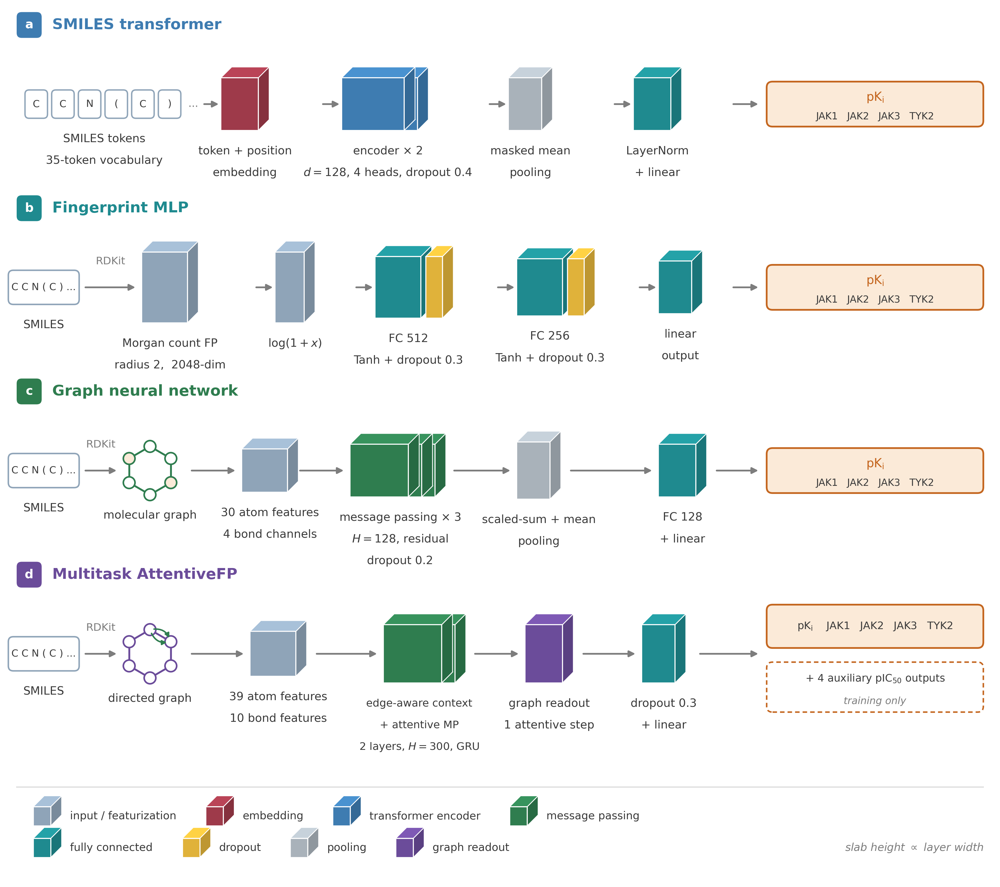

0.577) and ranking (Spearman 0.765), reproducibly. But my hand-designed objectives still won on selectivity, and the biggest lesson was not about architecture at all: it was that squeezing more out of the data (using the much larger pIC50 set as an auxiliary task) mattered more than any fancy network.
The setup
JAK inhibitors are a big deal in autoimmune disease, and the hard part is rarely "does this molecule bind a JAK." It is "does it bind the right JAK and leave the others alone." So this is really two questions stacked on top of each other: absolute affinity (pKi per kinase) and selectivity (the gap between kinases). I set it up as a four-target regression from structure, and I evaluate on a scaffold-shifted test set, meaning the test molecules come from chemical scaffolds the model never saw in training. That is the honest version of the problem, and also the brutal one.
I came at it from two directions. First I designed and trained a spread of baselines and neural models by hand. Then I built a research agent, gave it the raw data and a compute budget, and told it to propose, train, and evaluate its own models in a sandbox, to see if it could out-model me.
The data is small and lopsided
There are 10,725 measurements over 4,528 unique molecules, which sounds fine until you look closer. Only 1,989 of those are pKi (the thing I actually want); the other 8,736 are pIC50. And it is lopsided across kinases: JAK2 has 804 pKi labels, TYK2 has just 163. After the scaffold split, the test set has 63 JAK1, 84 JAK2, 22 JAK3, and 12 TYK2 pKi labels. Twelve. So any single TYK2 molecule can swing the macro score, and I try not to over-read small differences because of it.

I cleaned every SMILES with RDKit (normalize functional groups, keep the largest fragment, reionize, neutralize when it is chemically reasonable, write canonical SMILES), then split molecules by Bemis-Murcko scaffold into 80/10/10 train/validation/test, so no scaffold ever appears in two splits. The rare-scaffold test labels stayed locked away: only the evaluator could read them, and only after predictions were saved. One detail that matters a lot: I kept pKi and pIC50 as separate endpoints and never converted one into the other. Combining Ki and IC50 from different assays is a well-documented way to inject noise [3], and related kinase work finds that heterogeneous assay readouts are most useful when integrated in stages rather than pooled into one endpoint [4]. Only a handful of molecules even have both measurements here, so there is no reliable conversion to learn anyway.
The models I built by hand
The lineup: a per-kinase random forest on Morgan fingerprints, a SMILES transformer, a fingerprint MLP, a residual message-passing GNN, a selectivity-aware MLP, and a multitask AttentiveFP graph network [1, 2]. Four different ways of representing a molecule (sequence, fixed substructure counts, learned graph, attentive graph), all on the same sparse four-target problem.

Here is the thing that surprised me: architecture barely mattered. The random forest, the fingerprint MLP, and the GNN all landed within sampling noise of each other on absolute pKi. The transformer was the one clear loser, and it fell apart specifically on JAK3, exactly what you would expect from a data-hungry sequence model with very few labels.
What actually moved the needle was data leverage. The cleanest win in the whole study was giving AttentiveFP extra auxiliary output heads for pIC50. This lets the shared encoder learn from the 8,736 pIC50 molecules without ever pretending pIC50 is pKi. That one change dropped macro pKi RMSE from 0.796 to 0.676 and pairwise error from 0.504 to 0.429. More supervision, not more layers.
Selectivity wants a different objective
Selectivity is about the difference between kinases, so I added a pairwise margin term directly to the fingerprint MLP's loss, keeping everything else fixed so I was isolating the objective and not the representation:
\[\mathcal{L} = (1-w)\,\mathcal{L}_{\mathrm{pKi}} + w\,\mathbb{E}_{a \ne b}\!\left[\frac{(\hat{y}_a - \hat{y}_b) - (y_a - y_b)}{\sigma_{ab}}\right]^2.\]
The weight \(w\) trades absolute-pKi supervision against between-kinase supervision. At \(w=1\) it collapses, because a difference-only loss does not care about the overall offset (add a constant to every prediction and the differences are unchanged), so the absolute level stops being identifiable. A moderate \(w=0.5\) gave the best selectivity-margin ranking (Spearman 0.638) at the cost of slightly worse absolute pKi. Separately, multitask AttentiveFP gave the lowest pairwise error (0.429). The takeaway I keep coming back to: the best affinity model and the best selectivity model are not the same model, so I score the two capabilities separately.
The research agent
The second half of the project was building a ReAct-style research agent [5] and letting it loose on the same data and splits. At each step it either returns a conclusion or calls a typed tool: it keeps a persistent research plan, writes a structured hypothesis log, runs Python in an isolated process with a persistent namespace, delegates focused questions to parallel subagents, and can pull evidence from the literature.

The piece I am happiest with is context management. I do not replay a giant growing transcript. Instead, summaries, tool outputs, and literature excerpts go into an append-only vector memory, and before each step I rebuild the prompt from the goal, the latest observation, the persistent plan, the last few step summaries, and a handful of retrieved records. Retrieval uses cosine similarity followed by maximal marginal relevance (MMR), so a run of near-identical code outputs cannot crowd out the hypothesis list and the literature:
\[\mathrm{MMR} = \arg\max_{d_i \in R \setminus S}\left[\lambda\,\cos(d_i, q) - (1-\lambda)\max_{d_j \in S}\cos(d_i, d_j)\right].\]With \(\lambda = 0.7\), retrieval stays relevant but penalizes near-duplicates. In an earlier version without this, long code dumps literally pushed the agent's own evidence and hypotheses out of context, and the plan plus diverse recall fixed that without any task-specific hacks. The literature tool itself builds on Decode ELM, an earlier project of mine that searches preprint servers, parses full text, and returns cited answers.
Did it beat me?
On affinity, yes, and not by luck. Given the data and a budget, the agent independently decided to use the larger pIC50 set as auxiliary supervision (the same lever I found by hand) and built a multitask model in every single run. Its best, an eight-task MLP on Morgan features, hit macro RMSE 0.577 and Spearman 0.765. Two separately trained refinements also beat every human model on both direct pKi metrics, so the win did not hinge on one lucky seed.

But "beat me" needs an asterisk. I told the agent to minimize pKi error, so it converged on the strongest absolute predictor and never explicitly optimized the between-kinase gap. My selectivity gains came from deliberately designing objectives around that gap, the pairwise loss and the auxiliary pIC50 heads. So when you break selectivity down pair by pair, it is a genuine split decision: an agent model has the lowest pairwise error on four of six pairs including the well-sampled JAK1-JAK2, while my hand-designed objectives still lead on margin ranking for most pairs.

Where the agent hit a wall
I then froze a strong model and handed it back to the agent to improve. It reliably lowered cross-validation error in every run, but none of that transferred to the rare-scaffold test beyond run-to-run noise. Part of the apparent CV gain was even selection bias (tuning on the same folds it reported). The lesson was not that the agent ran out of ideas, it was that the gap between the validation signal and genuine out-of-scaffold performance was the real ceiling. You cannot optimize your way past a metric that does not quite measure what you care about.
Literature grounding was similar: it changed which ideas got tried (and made the reasoning traceable and cite-backed, which I loved), but it did not improve out-of-scaffold accuracy. One nice moment: the literature agent caught a cross-kinase imputation experiment that was leaking held-out labels into its features and flagged it, rather than reporting the implausibly good score.
Calibration, honestly
The five-fold ensembles were badly overconfident: the nominal 90% interval from fold disagreement covered only about 26% of real pKi values for the best agent model. Fold spread is a decent relative warning signal, but its raw magnitude wildly understates true error. So I retrained the AttentiveFP model to predict a molecule-specific variance and combined that with seed and fold disagreement. Coverage for a nominal 90% interval jumped from 50.1% to 87.3%, cutting calibration error to 3.6 points. That honesty was not free: point RMSE rose to 0.799 and intervals widened to about 2.2 pKi units. So I keep the sharp model for point predictions and the calibrated one when I actually need to trust an interval.
Takeaways
On a small, scaffold-shifted dataset like this, architecture mattered less than data leverage: exploiting the much larger pIC50 set as a separate auxiliary task was the clearest and most reproducible win, by hand and by agent. Affinity and selectivity came from different models, so I select on them separately. And the agent genuinely earned its keep, it found better pKi models than I did and got there through the same lever I found manually, without being told to look for it. The instrumentation (the hypothesis log, the label-isolated evaluator) is what made every number here auditable after the fact, which for me is the whole point of doing it this way.
For the record: I designed the human-trained models and the agent architecture myself; the agent and its subagents ran on Claude Opus 4.8 through LiteLLM, with text-embedding-3-small for the vector memory and document indexing.